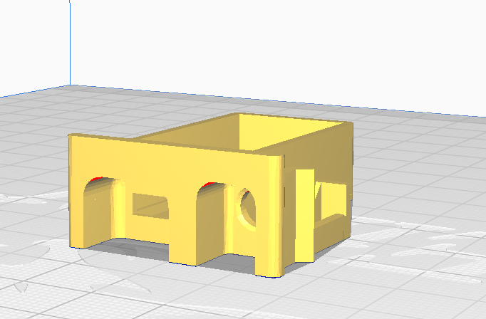
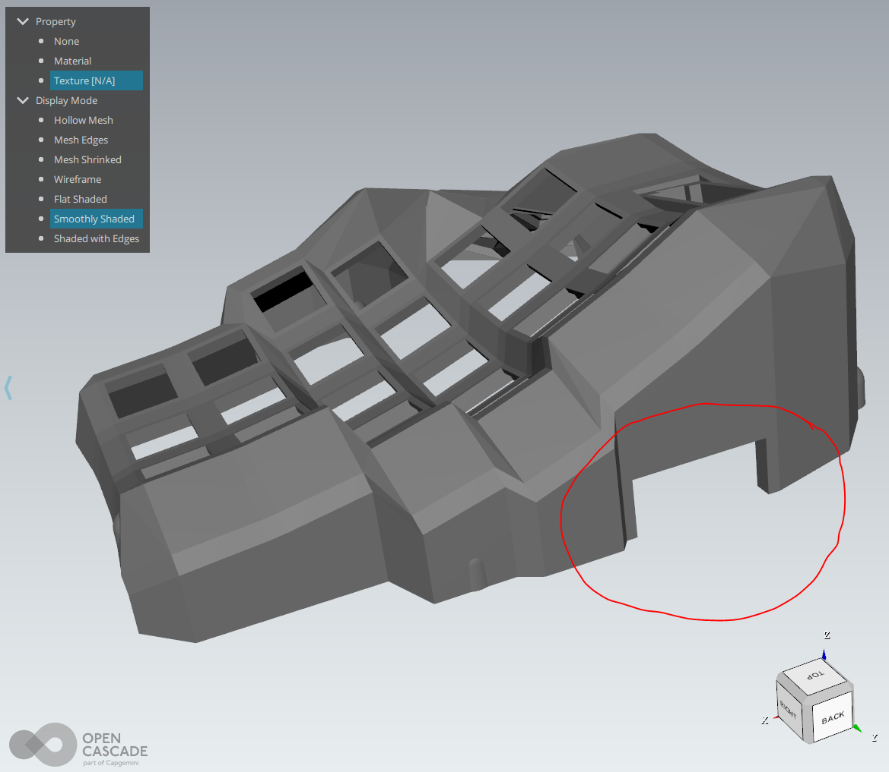
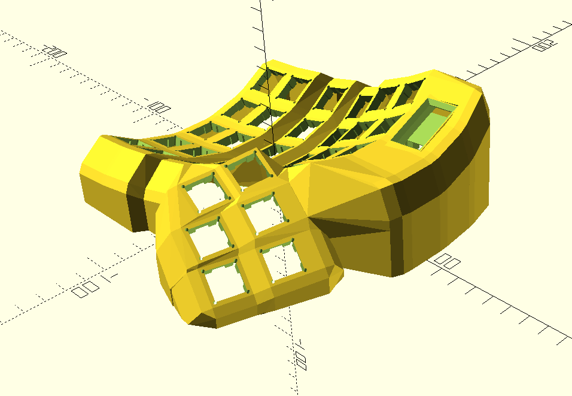
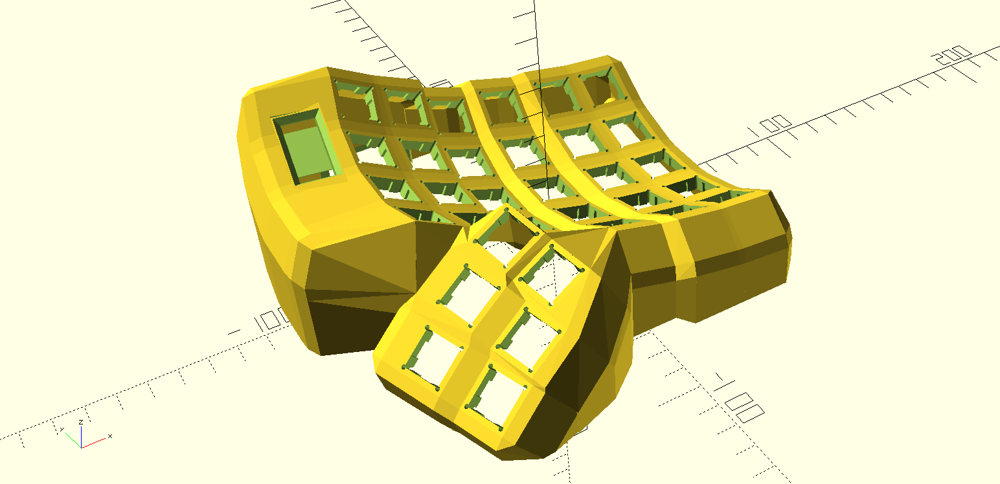
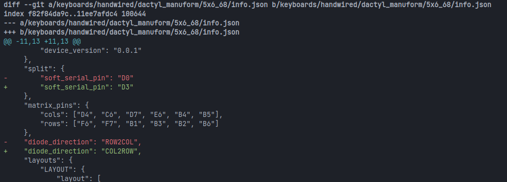
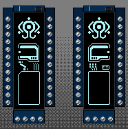
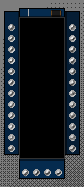
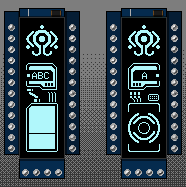
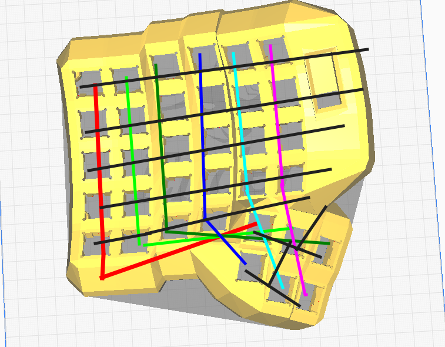
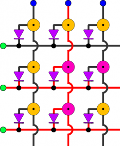

El primer teclado que hice, tuvo varios errores, la cabeza de los tornillos quedaban muy afuera de la base y haceian que al momento de escribir el teclado se deslizara, las pantallas que escoji aunque les di un uso, a veces no funcionaban de la forma esperada, las perillas quedaron muy cerca de los
bonotes y no se pueden mover tan facil, etc.
Entonces mejor decidi hacer una nueva version de el teclado, y para esto lo primero que cambie fue el modelo 3D, este modelo tambien consisten en dos teclados separados, pero me intereso la idea de aprovechar la impresion 3D para darles un relieve, primero quise usar este fork de el modelo original del teclado dactyl manuform, pues este repositorio tiene una forma estandar de crear estos teclados y es muy facil de hacer modificaciones, pero al ver los forks de este fork me encontre con este otro fork que no solo parece que incluye mejoras en la generacion de la geometria, pues ha diferencia del primero este usa python para generar los modelos 3D, otra de las caracteristicas por la cual lo escoji es por que por defecto tiene la opcion de generar los modelos con un espacio para una pantalla oled de 128x32 con varios metodos para colocar esta en su lugar, por lo que esto me ahorraria este trabajo de modificar el diseño, y finalmente este tiene la opcion de generar los modelos con un espacio abierto para colocar cualquier adaptador que quepa en ese lugar, dando flexibilidad sobre que microcontrollador se puede usar.
Lo unico malo que le encontre a este modelo es que los enlaces para los modelos de los posibles montadores del controlador estan caidos, por lo que hay que buscar un poco, pero los pude encontrar en la Wayback machine aqui gracias a este post, aun asi tuve que modificarlo pues los controladores no eran el pro-micro aunque si estan usando el mismo microprocesador
Y para convertir los archivos .scad a .stl hay que abrirlos con el programa OpenSCAD y ahi nos da la opcion de exportarlos a stl.
Despues de imprimirlos coloque los botones en sus respectivos lugares y los conecte segun el firmware que iba a ocupar,.
El programa que se encarga de programar al microcontrolador para que funcione como teclado en conjunto con otro microcontrolador se llama QMK en el cual hay una gran cantidad de firmwares para diferentes teclados, al descarga la utilidad para terminal tambien se va a clonar el repositorio con todos los teclados. En la carpeta keyboards/handwired/dactyl_manuform encontraremos la carpeta de 5x6_68 que hace referencia al teclado que tengo, pues de 5x6 y con las 6 teclas para los pulgares hacen un total de 68 teclas entre los dos teclados.
Hay que modificar estos archivos directamente para poder cambiar el funcionamiento del teclado, el primero cambio que hice fue cambiar el pin de comunicacion y la orientacion de los diodos, esto se hace en archivo info.json, el cambio del pin de la comunicacion fue por que para las pantallas se utiliza el protocolo I2C y para este protocolo se necesitan dos pines, que serian el 2 y 3 en digital pero los pines D1 Y D0 si se utiliza el nombre de los pines por como los detecta el microcontrolador y el segundo por como conecte hice la matriz de conecciones
En el archivo de rules.mk solo active el uso de las pantallas oled con la linea
El codigo fuente del keymap original se encuentra aqui, las modificaciones que realice fueron primero copiar esta carpeta de druotoni a la carpeta de keymaps del teclado 5x6_68, despues en el archivo keymap.c hay que agregar estas lineas:
Teniendo un total de 6 columans con 6 filas, los diodos los coloque con el anodo saliendo del switch y el catodo conectado a su columna correspondiente, osea de la siguiente forma:
Entonces mejor decidi hacer una nueva version de el teclado, y para esto lo primero que cambie fue el modelo 3D, este modelo tambien consisten en dos teclados separados, pero me intereso la idea de aprovechar la impresion 3D para darles un relieve, primero quise usar este fork de el modelo original del teclado dactyl manuform, pues este repositorio tiene una forma estandar de crear estos teclados y es muy facil de hacer modificaciones, pero al ver los forks de este fork me encontre con este otro fork que no solo parece que incluye mejoras en la generacion de la geometria, pues ha diferencia del primero este usa python para generar los modelos 3D, otra de las caracteristicas por la cual lo escoji es por que por defecto tiene la opcion de generar los modelos con un espacio para una pantalla oled de 128x32 con varios metodos para colocar esta en su lugar, por lo que esto me ahorraria este trabajo de modificar el diseño, y finalmente este tiene la opcion de generar los modelos con un espacio abierto para colocar cualquier adaptador que quepa en ese lugar, dando flexibilidad sobre que microcontrollador se puede usar.
Lo unico malo que le encontre a este modelo es que los enlaces para los modelos de los posibles montadores del controlador estan caidos, por lo que hay que buscar un poco, pero los pude encontrar en la Wayback machine aqui gracias a este post, aun asi tuve que modificarlo pues los controladores no eran el pro-micro aunque si estan usando el mismo microprocesador


Para generar los teclados hay que editar el archivo ubicado en dactyl-keyboard/src/generate_configuration.py, cada valor tiene una pequeña descripcion de lo que este modifica, y al finalizar de cambiar todos los valorees que se quieran, se ejecuta ese mismo archivo, pues este generara un
archivo json que luego se usara para crear los modelos ahora si,en las modficiaciones que le hice cambie el tamaño de la pantalla para que se ajustace a la que tenia, mantuve la corvatura por defecto pues pense que seria la mejor ahora que ya los tengo de forma fisica tal vez la hubiera incrementado un poco,
y finalmete seleccione el modelo del teclado el cual tiene 6 botones para el pulgar, entonces mi archivo quedo asi:
import sys
import getopt
import os
import json
pi = 3.14159
d2r = pi / 180
r2d = 180 / pi
shape_config = {
'ENGINE': 'solid', # 'solid' = solid python / OpenSCAD, 'cadquery' = cadquery / OpenCascade
# 'ENGINE': 'cadquery', # 'solid' = solid python / OpenSCAD, 'cadquery' = cadquery / OpenCascade
######################
## Shape parameters ##
######################
'save_dir': '.',
'config_name': "DM",
#'show_caps': 'MX',
'show_caps': False,
'show_pcbs': False, #only runs if caps are shown, easist place to initially inject geometry
'nrows': 5, #5, # key rows
'ncols': 6, #6, # key columns
'alpha': pi / 12.0, # curvature of the columns
'beta': pi / 36.0, # curvature of the rows
'centercol': 3, # controls left_right tilt / tenting (higher number is more tenting)
'centerrow_offset': 3, # rows from max, controls front_back tilt
'tenting_angle': pi / 12.0, # or, change this for more precise tenting control
# symmetry states if it is a symmetric or asymmetric bui. If asymmetric it doubles the generation time.
'symmetry': "symmetric", # "asymmetric" or "symmetric"
'column_style_gt5': "orthographic",
'column_style': "standard", # options include :standard, :orthographic, and :fixed
'reduced_inner_cols': 2, #currently supports 0 or 2 due to thumb cluster attachment
'reduced_outer_cols': 0,
'thumb_offsets': [6, -3, 7],
'keyboard_z_offset': (
11 # controls overall height# original=9 with centercol=3# use 16 for centercol=2
),
'extra_width': 2.0, # extra space between the base of keys# original= 2
'extra_height': 0.5, # original= 0.5
'web_thickness': 4.0 + 1.1,
'post_size': 0.1,
# post_adj': post_size / 2
'post_adj': 0,
##############################
# THUMB PARAMETERS
##############################
# 'DEFAULT' 6-key, 'MINI' 5-key, 'CARBONFET' 6-key, 'MINIDOX' 3-key, 'TRACKBALL_ORBYL', 'TRACKBALL_CJ'
'thumb_style': 'CARBONFET',
'default_1U_cluster': True, # only used with default, makes top right thumb cluster key 1U
# Thumb key size. May need slight oversizing, check w/ caps. Additional spacing will be automatically added for larger keys.
'minidox_Usize': 1.6,
# Thumb plate rotations, anything other than 90 degree increments WILL NOT WORK.
'mini_index_key': True,
# Screw locations and extra screw locations for separable thumb, all from thumb origin
# Pulled out of hardcoding as drastic changes to the geometry may require fixes to the screw mounts.
# First screw in separable should be similar to the standard location as it will receive the same modifiers.
'default_thumb_screw_xy_locations': [[-21, -58]],
'default_separable_thumb_screw_xy_locations': [[-21, -58]],
'mini_thumb_screw_xy_locations': [[-29, -52]],
'mini_separable_thumb_screw_xy_locations': [[-29, -52], [-62, 10], [12, -25]],
'minidox_thumb_screw_xy_locations': [[-37, -34]],
'minidox_separable_thumb_screw_xy_locations': [[-37, -34], [-62, 12], [10, -25]],
'carbonfet_thumb_screw_xy_locations': [[-48, -37]],
'carbonfet_separable_thumb_screw_xy_locations': [[-48, -37], [-52, 10], [12, -35]],
'orbyl_thumb_screw_xy_locations': [[-53, -68]],
'orbyl_separable_thumb_screw_xy_locations': [[-53, -68], [-66, 8], [10, -40]],
'tbcj_thumb_screw_xy_locations': [[-40, -75]],
'tbcj_separable_thumb_screw_xy_locations': [[-40, -75], [-63, 10], [15, -40]],
'thumb_plate_tr_rotation': 0.0, # Top right plate rotation tweaks as thumb cluster is crowded for hot swap, etc.
'thumb_plate_tl_rotation': 0.0, # Top left plate rotation tweaks as thumb cluster is crowded for hot swap, etc.
'thumb_plate_mr_rotation': 0.0, # Mid right plate rotation tweaks as thumb cluster is crowded for hot swap, etc.
'thumb_plate_ml_rotation': 0.0, # Mid left plate rotation tweaks as thumb cluster is crowded for hot swap, etc.
'thumb_plate_br_rotation': 0.0, # Bottom right plate rotation tweaks as thumb cluster is crowded for hot swap, etc.
'thumb_plate_bl_rotation': 0.0, # Bottom right plate rotation tweaks as thumb cluster is crowded for hot swap, etc.
##############################
# EXPERIMENTAL
'separable_thumb': False, #creates a separable thumb section with additional screws to hold it down. Only attached at base.
##############################
###################################
## Trackball in Wall ##
###################################
'trackball_in_wall': False, # Separate trackball option, placing it in the OLED area
'tbiw_ball_center_row': 0.2, # up from cornerrow instead of down from top
'tbiw_translational_offset': (0.0, 0.0, 0.0),
'tbiw_rotation_offset': (0.0, 0.0, 0.0),
'tbiw_left_wall_x_offset_override': 50.0,
'tbiw_left_wall_z_offset_override': 0.0,
'tbiw_left_wall_lower_x_offset': 0.0,
'tbiw_left_wall_lower_y_offset': 0.0,
'tbiw_left_wall_lower_z_offset': 0.0,
'tbiw_oled_center_row': .75, # not none, offsets are from this position
'tbiw_oled_translation_offset': (-3.5, 0, 1.5), # Z offset tweaks are expected depending on curvature and OLED mount choice.
'tbiw_oled_rotation_offset': (0, 0, 0),
##########################################################################
## Finger Trackball in Wall EXPERIMENTAL WIP!!!! ##
##########################################################################
'finger_trackball_in_wall': False, # Separate trackball option, placing it in the OLED area
'tbiw_ball_center_column': 0.2, # up from cornerrow instead of down from top
'tbiw_translational_offset': (0.0, 0.0, 0.0),
'tbiw_rotation_offset': (0.0, 0.0, 0.0),
'tbiw_top_wall_y_offset_override': 50.0,
'tbiw_top_wall_z_offset_override': 0.0,
'tbiw_top_wall_extension_cols': 4,
###########################################
## Trackball JS / ORBYL Thumb Cluster ##
##########################################
'other_thumb': 'DEFAULT', # cluster used for second thumb except if ball_side == 'both'
'tbjs_key_diameter': 70,
'tbjs_Uwidth': 1.2, # size for inner key near trackball
'tbjs_Uheight': 1.2, # size for inner key near trackball
# Offsets are per key and are applied before rotating into place around the ball
# X and Y act like Tangential and Radial around the ball
# 'tbjs_translation_offset': (0, 0, 10), # applied to the whole assy
# 'tbjs_rotation_offset': (0, 10, 0), # applied to the whole assy
'tbjs_translation_offset': (0, 0, 2), # applied to the whole assy
'tbjs_rotation_offset': (0, -8, 0), # applied to the whole assy
'tbjs_key_translation_offsets': [
(0.0, 0.0, -3.0-5),
(0.0, 0.0, -3.0-5),
(0.0, 0.0, -3.0-5),
(0.0, 0.0, -3.0-5),
],
'tbjs_key_rotation_offsets': [
(0.0, 0.0, 0.0),
(0.0, 0.0, 0.0),
(0.0, 0.0, 0.0),
(0.0, 0.0, 0.0),
],
###################################
## Trackball CJ Thumb Cluster ##
###################################
'tbcj_inner_diameter': 42,
'tbcj_thickness': 2,
'tbcj_outer_diameter': 53,
###################################
## Trackball General ##
###################################
'trackball_modular': False, # Added, creates a hole with space for the lip size listed below.
'trackball_modular_lip_width': 3.0, # width of lip cleared out in ring location
'trackball_modular_ball_height': 3.0, # height of ball from ring , used to create identical position to fixed.
'trackball_modular_ring_height': 10.0, # height mount ring down from ball height. Covers gaps on elevated ball.
'trackball_modular_clearance': 0.5, # height of ball from ring, used to create identical position to fixed.
'ball_side': 'both', #'left', 'right', or 'both'
'ball_diameter': 34.0,
'ball_wall_thickness': 3, # should not be changed unless the import models are changed.
'ball_gap': 1.0,
'trackball_hole_diameter': 36.5,
'trackball_hole_height': 40,
'trackball_plate_thickness': 2,
'trackball_plate_width': 2,
# Removed trackball_rotation, ball_z_offset. and trackball_sensor_rotation and added more flexibility.
'tb_socket_translation_offset': (0, 0, 2.0), # applied to the socket and sensor, large values will cause web/wall issues.
'tb_socket_rotation_offset': (0, 0, 0), # applied to the socket and sensor, large values will cause web/wall issues.
'tb_sensor_translation_offset': (0, 0, 0), #deviation from socket offsets, for fixing generated geometry issues
'tb_sensor_rotation_offset': (0, 0, 0), #deviation from socket offsets, for changing the sensor roll orientation
##############################
# EXPERIMENTAL PARAMETERS
##############################
'pinky_1_5U': False, # LEAVE AS FALSE, CURRENTLY BROKEN
'first_1_5U_row': 0,
'last_1_5U_row': 5,
'skeletal': False,
##############################
'wall_z_offset': 15, # length of the first downward_sloping part of the wall
'wall_x_offset': 5, # offset in the x and/or y direction for the first downward_sloping part of the wall (negative)
'wall_y_offset': 6, # offset in the x and/or y direction for the first downward_sloping part of the wall (negative)
'left_wall_x_offset': 12, # specific values for the left side due to the minimal wall.
'left_wall_z_offset': 3, # specific values for the left side due to the minimal wall.
'left_wall_lower_x_offset': 0, # specific values for the lower left corner.
'left_wall_lower_y_offset': 0, # specific values for the lower left corner.
'left_wall_lower_z_offset': 0,
'wall_thickness': 4.5, # wall thickness parameter used on upper/mid stage of the wall
'wall_base_y_thickness': 4.5, # wall thickness at the lower stage
'wall_base_x_thickness': 4.5, # wall thickness at the lower stage
'wall_base_back_thickness': 4.5, # wall thickness at the lower stage in the specifically in back for interface.
## Settings for column_style == :fixed
## The defaults roughly match Maltron settings
## http://patentimages.storage.googleapis.com/EP0219944A2/imgf0002.png
## fixed_z overrides the z portion of the column ofsets above.
## NOTE: THIS DOESN'T WORK QUITE LIKE I'D HOPED.
'fixed_angles': [d2r * 10, d2r * 10, 0, 0, 0, d2r * -15, d2r * -15],
'fixed_x': [-41.5, -22.5, 0, 20.3, 41.4, 65.5, 89.6], # relative to the middle finger
'fixed_z': [12.1, 8.3, 0, 5, 10.7, 14.5, 17.5],
'fixed_tenting': d2r * 0,
#################
## Switch Hole ##
#################
# plate options are
# 'HOLE' = a square hole. Also useful for applying custom plate files.
# 'NUB' = original side nubs.
# 'UNDERCUT' = snap fit undercut. May require CLIP_THICKNESS and possibly CLIP_UNDERCUT tweaking
# and/or filing to get proper snap.
# 'NOTCH' = snap fit undercut only near switch clip. May require CLIP_THICKNESS and possibly CLIP_UNDERCUT
# tweaking and/or filing to get proper snap.
# 'HS_NUB' = hot swap underside with nubs.
# 'HS_UNDERCUT' = hot swap underside with undercut. Does not generate properly. Hot swap step needs to be modified.
# 'HS_NOTCH' = hot swap underside with notch. Does not generate properly. Hot swap step needs to be modified.
# 'plate_style': 'NUB',
'plate_style': 'NOTCH',
'hole_keyswitch_height': 14.0,
'hole_keyswitch_width': 14.0,
'nub_keyswitch_height': 14.4,
'nub_keyswitch_width': 14.4,
'undercut_keyswitch_height': 14.0,
'undercut_keyswitch_width': 14.0,
'notch_width': 6.0, # If using notch, it is identical to undecut, but only locally by the switch clip
'sa_profile_key_height': 12.7,
'sa_length': 18.5,
'sa_double_length': 37.5,
'plate_thickness': 4 + 1.1,
'plate_rim': 1.5 + 0.5,
# Undercut style dimensions
'clip_thickness': 1.1,
'clip_undercut': 1.0,
'undercut_transition': .2, # NOT FUNCTIONAL WITH OPENSCAD, ONLY WORKS WITH CADQUERY
# Custom plate step file
'plate_file': None,
'plate_offset': 0.0,
##########################
## OLED Mount Location
##########################
# Initial pass will be manual placement. Can be used to create other mounts as well.
# Mount type options:
# None or 'NONE' = No OLED mount
# 'UNDERCUT' = Simple rectangle with undercut for clip in item
# 'SLIDING' = Features to slide the OLED in place and use a pin or block to secure from underneath.
# 'CLIP' = Features to set the OLED in a frame a snap a bezel down to hold it in place.
'oled_mount_type': 'SLIDING',
#'oled_mount_type': None,
'oled_center_row': 1.25, # if not None, this will override the oled_mount_location_xyz and oled_mount_rotation_xyz settings
#'oled_center_row': None, # if not None, this will override the oled_mount_location_xyz and oled_mount_rotation_xyz settings
'oled_translation_offset': (0, 0, 3), # Z offset tweaks are expected depending on curvature and OLED mount choice.
'oled_rotation_offset': (0, 0, 0),
'oled_configurations': {
'UNDERCUT':{
# Common parameters
'oled_mount_width': 10.0, # 15
'oled_mount_height': 32.0, # 35
'oled_mount_rim': 3.0,
'oled_mount_depth': 4.0,
'oled_mount_cut_depth': 20.0,
'oled_mount_location_xyz': (-80.0, 20.0, 45.0), # will be overwritten if oled_center_row is not None
'oled_mount_rotation_xyz': (13.0, 0.0, -6.0), # will be overwritten if oled_center_row is not None
'oled_left_wall_x_offset_override': 28.0,
'oled_left_wall_z_offset_override': 0.0,
'oled_left_wall_lower_y_offset': 12.0,
'oled_left_wall_lower_z_offset': 5.0,
# 'UNDERCUT' Parameters
'oled_mount_undercut': 1.0,
'oled_mount_undercut_thickness': 2.0,
},
'SLIDING': {
# Common parameters
'oled_mount_width': 12.1, # width of OLED, plus clearance 12.5
'oled_mount_height': 27, # length of screen 25
'oled_mount_rim': 2.5,
'oled_mount_depth': 7.0,
'oled_mount_cut_depth': 20.0,
'oled_mount_location_xyz': (-78.0, 10.0, 41.0), # will be overwritten if oled_center_row is not None
'oled_mount_rotation_xyz': (6.0, 0.0, -3.0), # will be overwritten if oled_center_row is not None
'oled_left_wall_x_offset_override': 24.0,
'oled_left_wall_z_offset_override': 0.0,
'oled_left_wall_lower_y_offset': 12.0,
'oled_left_wall_lower_z_offset': 5.0,
# 'SLIDING' Parameters
'oled_thickness': 4.2, # thickness of OLED, plus clearance. Must include components
'oled_edge_overlap_end': 6.5, # length from end of viewable screen to end of PCB
'oled_edge_overlap_connector': 5.5, # length from end of viewable screen to end of PCB on connection side.
'oled_edge_overlap_thickness': 2.5, # thickness of material over edge of PCB
'oled_edge_overlap_clearance': 2.5, # Clearance to insert PCB before laying down and sliding.
'oled_edge_chamfer': 2.0,
},
'CLIP': {
# Common parameters
'oled_mount_width': 12.5, # whole OLED width
'oled_mount_height': 39.0, # whole OLED length
'oled_mount_rim': 2.0,
'oled_mount_depth': 7.0,
'oled_mount_cut_depth': 20.0,
'oled_mount_location_xyz': (-78.0, 20.0, 42.0), # will be overwritten if oled_center_row is not None
'oled_mount_rotation_xyz': (12.0, 0.0, -6.0), # will be overwritten if oled_center_row is not None
'oled_left_wall_x_offset_override': 24.0,
'oled_left_wall_z_offset_override': 0.0,
'oled_left_wall_lower_y_offset': 12.0,
'oled_left_wall_lower_z_offset': 5.0,
# 'CLIP' Parameters
'oled_thickness': 4.2, # thickness of OLED, plus clearance. Must include components
'oled_mount_bezel_thickness': 3.5, # z thickness of clip bezel
'oled_mount_bezel_chamfer': 2.0, # depth of the 45 degree chamfer
'oled_mount_connector_hole': 6.0,
'oled_screen_start_from_conn_end': 6.5,
'oled_screen_length': 24.5,
'oled_screen_width': 10.5,
'oled_clip_thickness': 1.5,
'oled_clip_width': 6.0,
'oled_clip_overhang': 1.0,
'oled_clip_extension': 5.0,
'oled_clip_width_clearance': 0.5,
'oled_clip_undercut': 0.5,
'oled_clip_undercut_thickness': 2.5,
'oled_clip_y_gap': .2,
'oled_clip_z_gap': .2,
}
},
'screws_offset': 'INSIDE', # 'OUTSIDE', 'INSIDE', 'ORIGINAL'
'screw_insert_height': 3.8,
# 'screw_insert_bottom_radius': 5.31 / 2, #Designed for inserts
# 'screw_insert_top_radius': 5.1 / 2, #Designed for inserts
'screw_insert_bottom_radius': 2.5 / 2, # Designed for self tapping
'screw_insert_top_radius': 2.5 / 2, # Designed for self tapping
'screw_insert_outer_radius': 4.25, # Common to keep interface to base
# Does anyone even use these? I think they just get in the way.
'wire_post_height': 7,
'wire_post_overhang': 3.5,
'wire_post_diameter': 2.6,
###################################
## Controller Mount / Connectors ##
###################################
# connector options are
# 'RJ9_USB_WALL' = Standard internal plate with RJ9 opening and square cutout for connection.
# 'USB_WALL' = Standard internal plate with a square cutout for connection, no RJ9.
# 'RJ9_USB_TEENSY' = Teensy holder
# 'USB_TEENSY' = Teensy holder, no RJ9
# 'EXTERNAL' = square cutout for a holder such as the one from lolligagger.
# 'NONE' = No openings in the back.
'controller_mount_type': 'EXTERNAL',
'external_holder_height': 12.5,
'external_holder_width': 28.75,
'external_holder_xoffset': -5.0,
'external_holder_yoffset': -4.5, #Tweak this value to get the right undercut for the tray engagement.
# Offset is from the top inner corner of the top inner key.
###################################
## PCB Screw Mount ##
###################################
"pcb_mount_ref_offset": [0, -5, 0],
"pcb_holder_size": [34.6, 7, 4],
"pcb_holder_offset": [8.9, 0, 0],
"pcb_usb_hole_size": [7.5, 10.0, 4],
"pcb_usb_hole_offset": [15, 0, 4.5],
"wall_thinner_size": [34, 7, 10],
"trrs_hole_size": [3, 20],
"trrs_offset": [0, 0, 1.5],
"pcb_screw_hole_size": [.5, 10],
"pcb_screw_x_offsets": [- 5.5, 7.75, 22], # for the screw positions off of reference
"pcb_screw_y_offset": -2,
###################################
## Bottom Plate Dimensions
###################################
# COMMON DIMENSION
'screw_hole_diameter': 3,
# USED FOR CADQUERY ONLY
'base_thickness': 3.0, # thickness in the middle of the plate
'base_offset': 3.0, # Both start flat/flush on the bottom. This offsets the base up (if positive)
'base_rim_thickness': 5.0, # thickness on the outer frame with screws
'screw_cbore_diameter': 6.0,
'screw_cbore_depth': 2.5,
# Offset is from the top inner corner of the top inner key.
###################################
## HOLES ON PLATE FOR PCB MOUNT
###################################
#'plate_holes': False,
'plate_holes': True,
'plate_holes_xy_offset': (0.0, 0.0),
'plate_holes_width': 14.3,
'plate_holes_height': 14.3,
'plate_holes_diameter': 1.6,
'plate_holes_depth': 20.0,
###################################
## EXPERIMENTAL
'plate_pcb_clear': False,
'plate_pcb_size': (18.5, 18.5, 5),
'plate_pcb_offset': (0, 0, 0),# this is off of the back of the plate size.
###################################
###################################
## SHOW PCB FOR FIT CHECK
###################################
'pcb_width': 18.0,
'pcb_height': 18.0,
'pcb_thickness': 1.5,
'pcb_hole_diameter': 2,
'pcb_hole_pattern_width': 14.3,
'pcb_hole_pattern_height': 14.3,
###################################
## COLUMN OFFSETS
####################################
'column_offsets': [
[0, 0, 0],
[0, 0, 0],
[0, 2.82, -4.5],
[0, 0, 0],
[0, -6, 5],# REDUCED STAGGER
[0, -6, 5],# REDUCED STAGGER
[0, -6, 5],# NOT USED IN MOST FORMATS (7th column)
],
}
####################################
## END CONFIGURATION SECTION
####################################
def save_config():
# Check to see if the user has specified an alternate config
opts, args = getopt.getopt(sys.argv[1:], "", ["config=", "update="])
got_opts = False
for opt, arg in opts:
if opt in ('--update'):
with open(os.path.join(r"..", "configs", arg + '.json'), mode='r') as fid:
data = json.load(fid)
shape_config.update(data)
got_opts = True
for opt, arg in opts:
if opt in ('--config'):
# If a config file was specified, set the config_name and save_dir
shape_config['save_dir'] = arg
shape_config['config_name'] = arg
got_opts = True
# Write the config to ./configs/.json
if got_opts:
with open(os.path.join(r"..", "configs", shape_config['config_name'] + '.json'), mode='w') as fid:
json.dump(shape_config, fid, indent=4)
else:
with open(os.path.join(r".", 'run_config.json'), mode='w') as fid:
json.dump(shape_config, fid, indent=4)
if __name__ == '__main__':
save_config()
## HERE FOR QUICK TESTING, SHOULD BE COMMENTED ON COMMIT
# from dactyl_manuform import *
# run()
Resultando en los siguientes modelos:


Y para convertir los archivos .scad a .stl hay que abrirlos con el programa OpenSCAD y ahi nos da la opcion de exportarlos a stl.
Despues de imprimirlos coloque los botones en sus respectivos lugares y los conecte segun el firmware que iba a ocupar,.
Firmware
El programa que se encarga de programar al microcontrolador para que funcione como teclado en conjunto con otro microcontrolador se llama QMK en el cual hay una gran cantidad de firmwares para diferentes teclados, al descarga la utilidad para terminal tambien se va a clonar el repositorio con todos los teclados. En la carpeta keyboards/handwired/dactyl_manuform encontraremos la carpeta de 5x6_68 que hace referencia al teclado que tengo, pues de 5x6 y con las 6 teclas para los pulgares hacen un total de 68 teclas entre los dos teclados.
Hay que modificar estos archivos directamente para poder cambiar el funcionamiento del teclado, el primero cambio que hice fue cambiar el pin de comunicacion y la orientacion de los diodos, esto se hace en archivo info.json, el cambio del pin de la comunicacion fue por que para las pantallas se utiliza el protocolo I2C y para este protocolo se necesitan dos pines, que serian el 2 y 3 en digital pero los pines D1 Y D0 si se utiliza el nombre de los pines por como los detecta el microcontrolador y el segundo por como conecte hice la matriz de conecciones


En el archivo de rules.mk solo active el uso de las pantallas oled con la linea
OLED_ENABLE = yes
Finalmente el codigo que utilice fue una version modificada del firmware para el teclado lily58 del keymap de druotoni, este lo adapte para que funcionara con mi teclado, esto lo hice pues me gusto mucho como se veia y como funcionaban las pantallas, ademas que este es tematico
de Serial Experiments Lain por lo que todavia me gusto más.



El codigo fuente del keymap original se encuentra aqui, las modificaciones que realice fueron primero copiar esta carpeta de druotoni a la carpeta de keymaps del teclado 5x6_68, despues en el archivo keymap.c hay que agregar estas lineas:
const uint16_t PROGMEM keymaps[][MATRIX_ROWS][MATRIX_COLS] = {
[_QWERTY] = LAYOUT(
KC_EQL , KC_1 , KC_2 , KC_3 , KC_4 , KC_5 , KC_6 , KC_7 , KC_8 , KC_9 , KC_0 , KC_MINS,
KC_TAB , KC_Q , KC_W , KC_E , KC_R , KC_T , KC_Y , KC_U , KC_I , KC_O , KC_P , KC_BSLS,
KC_ESC , KC_A , KC_S , KC_D , KC_F , KC_G , KC_H , GUI_J , ALT_K , CTL_L , SFT_SC , KC_QUOT,
KC_LSFT, KC_Z , KC_X , KC_C , KC_V , KC_B , KC_N , KC_M , KC_COMM, KC_DOT , KC_SLSH, KC_RSFT,
KC_GRV , KC_INS , KC_LEFT, KC_RGHT, KC_DOWN, KC_UP , KC_LBRC, KC_RBRC,
KC_LCTL, KC_LALT, KC_HOME, KC_DEL , KC_PGUP, KC_BSPC,
KC_SPC , KC_DEL , KC_END , MO(_LOWER), KC_PGDN, KC_ENT
),
[_LOWER] = LAYOUT(
XXXXXXX, XXXXXXX, XXXXXXX, XXXXXXX, XXXXXXX, XXXXXXX, XXXXXXX, XXXXXXX, XXXXXXX, XXXXXXX, XXXXXXX, QK_BOOT,
XXXXXXX, IMPORTS, XXXXXXX, USAGES , RENAME , XXXXXXX, XXXXXXX, KC_VOLD, KC_MUTE, KC_VOLU, XXXXXXX, XXXXXXX,
XXXXXXX, LINES , XXXXXXX, XXXXXXX, XXXXXXX, XXXXXXX, XXXXXXX, KC_MPRV, KC_MPLY, KC_MNXT, XXXXXXX, XXXXXXX,
XXXXXXX, XXXXXXX, XXXXXXX, XXXXXXX, XXXXXXX, XXXXXXX, XXXXXXX, XXXXXXX, XXXXXXX, XXXXXXX, XXXXXXX, XXXXXXX,
XXXXXXX, XXXXXXX, XXXXXXX, XXXXXXX, XXXXXXX, XXXXXXX, XXXXXXX, XXXXXXX,
XXXXXXX, XXXXXXX, XXXXXXX, XXXXXXX,XXXXXXX, XXXXXXX,
XXXXXXX, XXXXXXX, XXXXXXX, _______,XXXXXXX, XXXXXXX
)
};
Que es el keymap del teclado el cual queremos ocupar, pero tambien hay que eliminar o comentar estas otras lineas, las cuales son el keymap del teclado anterior.
//// clang-format off
//const uint16_t PROGMEM keymaps[][MATRIX_ROWS][MATRIX_COLS] = {
///* QWERTY
// [_QWERTY] = LAYOUT(
// KC_ESC, KC_1, KC_2, KC_3, KC_4, KC_5, KC_6, KC_7, KC_8, KC_9, KC_0, KC_DELETE,
// KC_TAB, KC_Q, KC_W, KC_E, KC_R, KC_T, KC_Y, KC_U, KC_I, KC_O, KC_P, FR_CIRC,
// KC_LSFT, KC_A, KC_S, KC_D, KC_F, KC_G, KC_H, KC_J, KC_K, KC_L, KC_SCLN, KC_RSFT,
// KC_LCTL, KC_Z, KC_X, KC_C, KC_V, KC_B, S(KC_Z), FR_RPRN, KC_N, KC_M, KC_COMM, KC_DOT, KC_SLSH, KC_QUOT,
// KC_LALT, TT(_RAISE), KC_SPC, TT(_LOWER), KC_ENT, KC_BSPC, KC_RBRC, KC_RGUI
// ),
//
// [_LOWER] = LAYOUT(
// KC_ESC, KC_F1, KC_F2, KC_F3, KC_F4, KC_F5, KC_F6, KC_F7, KC_F8, KC_F9, KC_F10, KC_DELETE,
// QK_BOOT, KC_F11, KC_F12, KC_DELETE, RCTL(FR_V), RCTL(FR_C), KC_HOME, KC_PGUP, KC_PSCR, RCTL(FR_Y), RCTL(KC_RIGHT), _______,
// _______,RCTL(FR_A), _______,RCTL(FR_S), RCTL(FR_Z), KC_BSPC, KC_LEFT, KC_DOWN, KC_UP, KC_RIGHT, _______, _______,
// KC_F9, KC_F11, KC_F10, KC_F5, LALT(KC_TAB), RCTL(FR_X), KC_ENT, _______, KC_END, KC_PGDN, _______, _______, _______, _______,
// _______,TT(_RAISE), _______, _______, _______, _______, KC_APP, _______),
//
// [_RAISE] = LAYOUT(
// _______, _______, _______, _______, _______, _______, _______, _______, KC_PSLS, KC_PAST, KC_PMNS, RGB_TOG,
// KC_GRV, FR_LBRC, FR_RBRC, _______, _______, _______, FR_EQL, KC_KP_7, KC_KP_8, KC_KP_9, KC_PPLS, RGB_HUI,
// _______, FR_AT, FR_PIPE, ALGR(KC_1), FR_EURO, FR_HASH, S(FR_EQL), KC_KP_4, KC_KP_5, KC_KP_6, _______, _______,
// KC_F7, KC_F8, KC_F9, KC_F10, FR_HASH, KC_F12, _______, _______, _______, KC_KP_1, KC_KP_2, KC_KP_3, _______, _______,
// _______, _______, _______, _______, _______, _______, KC_KP_0, KC_KP_DOT)
//};
Y finalmente en el archivo rules.mk (PERO SOLO EL QUE ESTA DENTRO DE LA CARPETA DE DRUOTONI) hay que eliminar dos lineas, pero yo lo borraria todo y lo remplazaria por esto
# Build Options
# change to "no" to disable the options, or define them in the Makefile in
# the appropriate keymap folder that will get included automatically
#
# Bootloader selection
#BOOTLOADER = atmel-dfu
# Do not enable SLEEP_LED_ENABLE. it uses the same timer as BACKLIGHT_ENABLE
SLEEP_LED_ENABLE = no # Breathing sleep LED during USB suspend
LTO_ENABLE = yes
SPACE_CADET_ENABLE = no
GRAVE_ESC_ENABLE = no
MAGIC_ENABLE = no
# If you want to change the display of OLED, you need to change here
SRC += ./burst.c \
./navi_logo.c \
./gui_state.c \
./fast_random.c \
./layer_frame.c \
./ring.c \
./boot.c \
./draw_helper.c \
Y finalmente hay que flasehar cada microcontrolador con el siguiente comando, el cual se ejecuta en la raiz de la carpeta de qmk_firmware:
make handwired/dactyl_manuform/5x6_68:druotoni:flash
Hay que tomar en cuenta que cada microcontrolador se flaseha de forma diferente, como dicen las intrucciones originales del keymap de droutoni hay que cambiar estas lineas en el archivo config.h segun de que lado se este flasheando el programa:
//#define IS_LEFT 1
//#define IS_RIGHT 1
Conecciones
Cuando estaba buscando instrucciones de como armar este teclado no encontre ninguna que hablara sobre las conecciones, asi que las tuve que redescubrir, finalmente estas fueron las conecciones:

Teniendo un total de 6 columans con 6 filas, los diodos los coloque con el anodo saliendo del switch y el catodo conectado a su columna correspondiente, osea de la siguiente forma:
